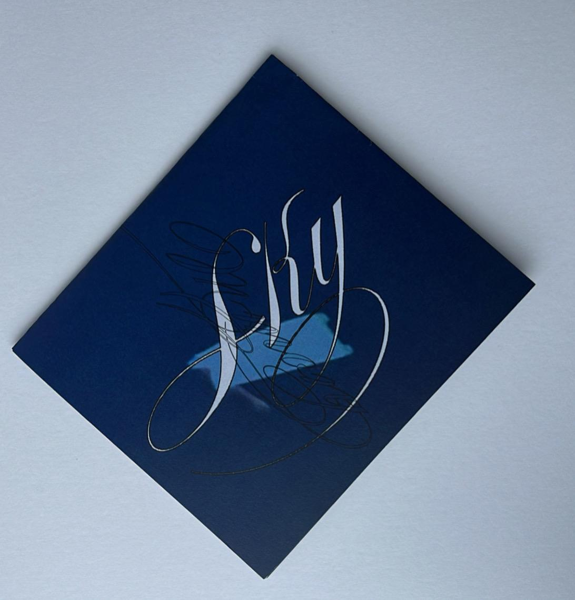
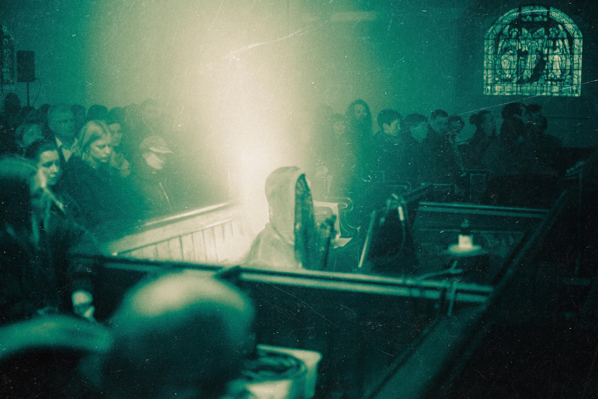
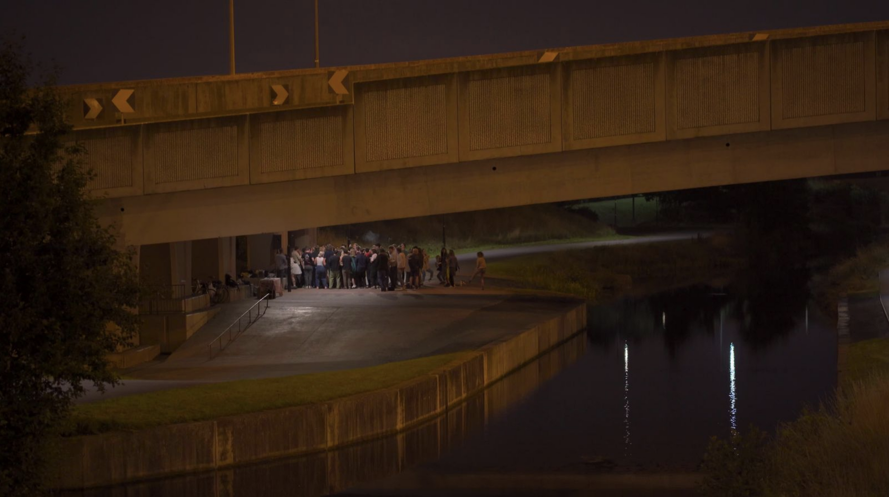
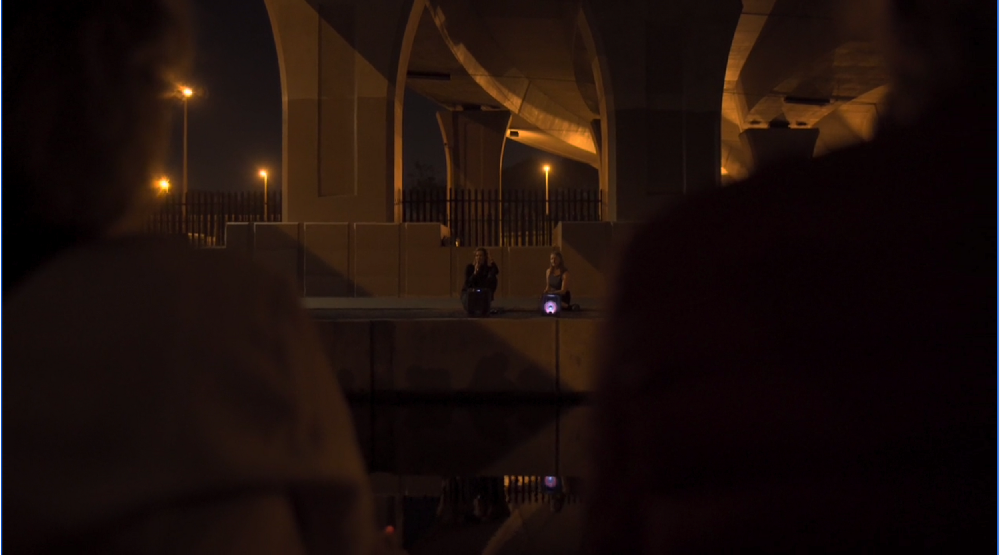

multidisciplinary projects
2026 — tba
past

2025 — Sky Memory: commissioned composition for ensemble Glasshouse in collaboration with Soria Reilly. Music composition, performance; printed booklet; Chapel Royal, Dublin Fringe Festival and Dublin Art Book Fair.

2024/25 — Tuam na farraige : commission, music production for tape. Run time 1 hour 24 minutes. Music recording, composition, production and arrangement.

2022–24 — Metaxu: production of event series evoking writings of Simone Weil, across various sites and locations in Dublin. Featuring live performances by Dylan Kerr, Nashpaints, Soria, Thom Dehli, entrd_, Gweynn, Jasmine Wood, Auffthorn, Asa Nisi Masa, Anna Heisterkamp and Aisling Or Ni Aodh. Visual works by Cara Farnan and writing by Holly Pickering. Image depicts Dylan Kerr performing on organ at the Pepper Cannister Church, Metaxu 2023.


2021 — Channels of Time: CD released on wherethetimegoes label, with performance on the banks of the Royal Canal and M50 underpass, Dublin. Music recording, production and arrangement; essay and site-specific performance.

2020 — Waterbodies: collaborative exhibition at Catalyst Arts Belfast with Cara Farnan and Emma Brenan. Writing, audio production, installation and live performance.